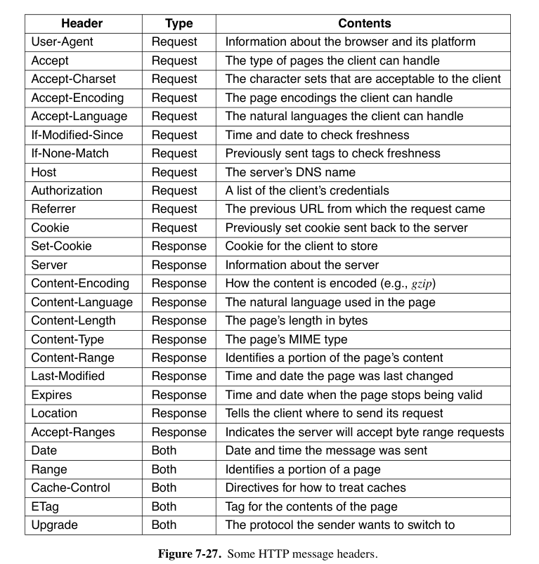

7: Application Layer¶
约 5673 个字 预计阅读时间 28 分钟
7.1 DNS¶
- DNS（Domain Name System，域名系统）
- 将域名映射到IP地址
7.1.1 DNS Lookup Process¶
- DNS将域名映射到IP地址的过程如下。
- 应用程序调用一个库过程（被称为 stub resolver 存根解析器，通常是
gethostbyname或其等效函数），并将域名作为参数传递给该函数。 - stub resolver 将包含域名的查询发送到本地DNS解析器（通常称为 local recursive resolver 本地递归解析器 或简称 local resolver 本地解析器），后者随后对一组DNS解析器执行 recursive lookup（递归查询）以查找该域名。
- local resolver 会向域名各个层级的相应的 name server（被称为该域的 authoritative name server 权威名称服务器）发出查询
- local recursive resolver 最终将包含相应IP地址的响应返回给 stub resolver，存根解析器再将结果传递给最初发出查询的函数。
- 应用程序调用一个库过程（被称为 stub resolver 存根解析器，通常是
- 查询和响应消息以UDP数据包的形式发送。
- DNS name server hierarchy
- local resolver 不会只返回一部分答案。
- root name server（以及后续的每个名称服务器）不会为 local name server 递归查询
- local resolver 通过进一步发出 iterative queries 来继续解析。
- local server 域中的主机不需要被配置为一个有完整域名的服务器，能访问 local resolver 即可。
- 每次查询包含一个 16-bit transaction identifier（事务标识符），包含在响应中。
- 用于让 name server 将查询映射到响应。
- caching：每个 answer都会被缓存
- 每个 DNS resource record 中都包含 TTL（Time to live）。
- DNS的查询格式
- 包括被查询的名称（QNAME），以及事务标识符等其它复制信息
- 事务标识符最初只有16位，查询和响应没有加密，导致 cache poisoning attack 等各种攻击
- 使用 0x20 encoding 来防御缓存投毒攻击。
- QNAME minimization：本地解析器只发送查询中相应 authoritative name server 能够解析的部分，而不是FQDN（fully qualified domain name，完全限定域名）
7.1.2 The DNS Name Space and Hierarchy¶
-
域名 hierarchy（层次结构）的顶层由ICANN（Internet Corporation for Assigned Names and Numbers）负责。
-
分为 gTLD（generic Top Level Domain，通用域名）与 ccTLD（country code Top Level Domain，国家域名）
-
现在 gTLD 可以选择任意顶级域名，包括非拉丁字符。
-
-
二级域名的获取由 registries（注册局）负责
-
再下一级，registrars（注册商）直接向用户销售域名。
-
域名层次结构的每一层用
.分隔。- 从技术上讲，所有FQDN都以
.结尾，表示DNS层次结构的根，但大多数操作系统会自动补全这一部分。- 以句点结束的称为 absolute domain name，否则为 relative domain name。
- 每个域名通过从它到根的路径向上命名。
- 从技术上讲，所有FQDN都以
-
域名不分大小写（case-insensitive）
-
域名的每个 component name 最多可以有63个字符，完整路径名称不得超过255个字符。
-
要创建一个新域名，需要获得其所在域名的许可。一旦创建并注册了新域名，无需从树的更高层获得任何人的许可即可创建子域名。
7.1.3 DNS Queries and Responses¶
-
DNS Queries
- 最常见的称为 A record query，要求将域名映射到相应互联网端点的IP地址。
- DNS可以用于查找 DNSBL (DNS-based blacklist) 中的域名。
- 客户端需要向特殊DNS服务器（如
pbl.spamhaus.org，一个 policy blacklist）发送 A record query - 要查找特定IP地址，客户端只需反转IP地址的八位字节，并将结果添加到
pbl.spamhaus.org前面。例如，要查找127.0.0.2，客户端只需发出对2.0.0.127.pbl.spamhaus.org的查询。 - 如果相应的IP地址在列表中，DNS查询将返回一个IP地址，该地址通常编码一些附加信息.
- 如果不在，返回相应的NXDOMAIN响应。
- 客户端需要向特殊DNS服务器（如
-
Extensions and Enhancements to DNS Queries
- EDNS0 CS Extended DNS Client Subnet（EDNS Client Subnet，EDNS0 CS）
- local recursive resolver 将 stub resolver 的 IP address subnet 发送给 authoritative name server，让它看到发起查询的客户端的IP子网。
- 0x20 encoding: local recursive server 会切换QNAME中每个字符的大小写，用域名中的每个字母的大小写为 DNS transaction identifier 编码一个额外的位。
- 其他解析器不应在后续的迭代查询或响应中更改QNAME的大小写。
- EDNS0 CS Extended DNS Client Subnet（EDNS Client Subnet，EDNS0 CS）
-
DNS Responses and Resource Records
-
在 DNS database 中，对每个域名关联IP地址之外的信息。
-
每个 resource record 是一个 five-tuple：
Domain_name Time_to_live Class Type Value-
域名：作为 primary search key
-
TTL：对于不同稳定性的域名，分配不同的生成时间
-
Class：对于互联网信息，它始终是IN。
-
Type与对应的Value字段存储的内容：见下图。
- SOA record 提供了 name server 所在区域的 primary source of information 的名称、管理员的电子邮件地址、唯一的 serial number 以及各种标志和超时。
- A record（Address）：某个主机的接口的32位IPv4地址。
-
AAAA record（quad A）：128位的IPv6地址。
- DNS解析器可能会为一个域名返回多个IP地址。
-
NS record（Name Server）：指定域名或子域的 name server。
- name server 是一个拥有域名数据库副本的主机
-
MX record（Mail Exchange）：根据email地址的域名寻找该网站的邮件服务器
-
CNAME record（Canonical Name）：记录网站别名
- record 举例：
www.cs.uchicago.edu 120 IN CNAME hnd.cs.uchicago.edu
- record 举例：
-
PTR record（Pointer）指向另一个域名，用于将IP地址与相应的名称关联起来
- 将名称与相应IP地址关联的PTR查找通常称为 reverse lookups（反向查找）
-
SRV record 允许为域中的给定服务标识主机。
- 类似于 MX record，但MX只用于邮件
-
SPF record（Sender Policy Framework）：在域名中编码关于哪些机器可以向互联网的其他部分发送邮件的信息。
- 举例：从自称dodgy的机器接收邮件，但域名记录表明邮件只能由名为smtp的机器发送，那么这封邮件很可能是伪造的垃圾邮件。
-
TXT record 最初是为了允许域名以任意方式 identify 自己。如今，它们通常编码机器可读的信息，通常是SPF信息。
-
-
-
DNSSEC Records
- DNSSEC record 在 DNS name server 的响应中携带数字签名，local / stub resolver 可以验证这些签名，以确保 DNS record 未被篡改。
- 每个DNS服务器使用其私钥计算每组 resource records 的 RRSET（Resource Record Set）的哈希值。相应的公钥可用于验证RRSET上的签名。
- 每个主机当然需要保证这个公钥的真实性，因此需要父名称服务器给权威名称服务器的公钥签名。举例来说，
.edu的权威名称服务器给.chicago.edu的权威名称服务器的公钥签名。 -
DNSSEC有两个与公钥相关的资源记录：
(1) RRSIG记录，对应于使用相应权威名称服务器私钥签名的RRSET的签名。
(2) DNSKEY记录，是相应RRSET的公钥，由父服务器的私钥签名。
-
只有 root-level public keys 必须以 out-of-band 的形式分发。
-
DNS Zones
-
Name Resolution（域名解析）
-
查找域名并找到IP地址的过程。
-
如果 resolver 对某个域名有对应 record，回将查询结果返回、
- 如果所查询的域名属于该 name server 的管辖范围，它将返回 authoritative record
- 例如
top.cs.vu.nl属于cs.vu.nl - authoritative record 一定是正确的，cached record 则不一定。
- 例如
- 如果所查询的域名属于该 name server 的管辖范围，它将返回 authoritative record
-
如果域名是 remote 的，没有本地滑轮，则 name server 开始 remote query，流程见下图。
- 有13个 root DNS server，对它们的查询通过 anycast routing 传递到离目标地址的最近实例。（注：anycast routing 任播 在考试范围表中标为不考。）

-
{kind=link}
{kind=link}
{kind=link}
7.2 Electronical Mail¶
- 电子邮件系统目前已经与文件传输协议分离。
- 邮件系统分为两部分：
- user agent（用户代理）允许人们阅读和发送电子邮件
- 发送邮件的动作称为 mail submission。
- 不会直接显示 message field 的原始内容，而是作了用户友好化处理。
- message disposition（消息处置）：删除、回复、转发等。
- 可以自动进行 filing（归档）操作，比如垃圾邮件、收件箱等。
- 垃圾邮件可能来自 botnet（僵尸网络）
- message transfer agents（消息传输代理，也称 mail server）负责将消息从发送方传输到接收方。
- 为系统进程
- SMTP（Simple Mail Transfer Protocol）：将邮件从 originator 移动到 recipient。
- 必须报告 delivery status。
- 包含 mailing list（即群发列表）等高级功能。
- user agent（用户代理）允许人们阅读和发送电子邮件
- mailbox 由 mail servers 维护。
- user agent 可以向 mail servers 发送命令操作邮箱。
- 电子邮件在 mail servers 之间以某种标准格式发送。
- envelope 封装了消息并包含传输所需的信息，消息传输代理也使用信封的信息进行路由。
- 信封内的消息由 header 与 body 组成。
- 头部包含 user agent 的控制信息。
- 正文完全是为人类收件人准备的，代理程序并不太关心它。
- 信封内的消息由 header 与 body 组成。
{kind=link}
7.2.1 Message Formats¶
-
RFC 5322 The Internet Message Format
-
基于RFC 822，并未明确区分信封字段和头字段。
-
消息由一个primitive envelope、一些header fields（头字段）、一个blank line、消息正文组成。
- 每个header field（逻辑上）由一行ASCII文本组成，包含field name、colon（冒号）以及（大多数字段都有的）字段的值。
-
下图中为消息传输相关的主要头字段。
-
Cc：Carbon copy，抄送
-
Bcc：Blind carbon copy，密送
-
每经过一个 message transfer agent，都要加一行 Received 字段。
-
Return-Path 字段由最后一个 message transfer agent 添加。
-
-
还有一些主要供人类阅读的字段。
-
Reply-to：用于告知收件人有事不要给发件人发邮件，要给这个字段这个人回复。
-
Message-Id：自动生成的数据，用于消息之间相互引用。
-
RFCC 5322明确允许用户自己创造头字段，要以
X-开头。
-
-
后面是 message body，用户可以在这里填写任何内容。
-
-
MIME The Multipurpose Internet Mail Extensions RFC 2045
-
继续使用RFC 822格式，但在消息正文中添加结构，并为非ASCII消息的传输定义编码规则。
-
添加了5个新的消息头字段。
- 任何不包含MIME-Version头字段的消息都被视为使用ASCII字符的消息处理
- Content-Description：是ASCII字符串，为必需字段，说明消息中包含什么内容。
- Content-Id：格式与Message-Id一致。
-
Content-Transfer-Encoding：表示消息正文如何编码。有5种。
- 每行不超过1000个每个7bit的ASCII字符
- 每行不超过1000个8位编码的的字符
- 二进制编码，不限制长度
- 对于不支持二进制数据的mail server，将二进制数据用 ASCII 编码（base64 MIME）
- 24位组被分解为四个6位单元，每个单元作为合法的ASCII字符发送。
- 编码为A表示0，B表示1，依此类推，接着是小写字母、10个数字，最后是+和/分别表示62和63。==和=序列表示最后一组分别只包含8或16位。回车符和换行符被忽略。
- 可以安全发送任意二进制文本
- 对于不支持二进制数据的mail server，将二进制数据用 ASCII 编码（base64 MIME）
-
Content-Type
-
{kind=link}
{kind=link}
{kind=link}
{kind=link}
7.2.2 Message Transfer¶
- SMTP (Simple Mail Transfer Protocol) and Extensions
- 包括mail submission和在消息传输代理之间传输消息两种用途。
- final delivery 不使用SMTP
- mail server 使用SMTP监听 TCP port 25 来进行 delivery（交付）
- 该服务器接受 incoming connections（经过一些安全检查），并接受消息以进行交付。
- 如果消息无法交付，则会向发送方返回一个包含不可交付消息前部分的错误报告。
- SMTP是一个简单的ASCII协议。
- mail server 之间的传输流程
- 在建立到端口25的TCP连接后，发送方（客户端）等待接收方（服务器）首先发言。
- 服务器首先发送一行文本，给出其身份并告知是否准备好接收邮件。
- 如果它不准备接收邮件，客户端将释放连接并稍后重试。
- 如果服务器愿意接收电子邮件，客户端会宣布电子邮件的发送方和接收方。
- 如果目的地存在这样的收件人，服务器会通知客户端可以发送消息。
- 然后客户端发送消息，服务器确认接收。
- 不需要校验和，因为TCP提供了可靠的字节流。
- 当所有电子邮件在两个方向上交换完毕后，连接将被释放。
- 具体对话（此处从略）
- 所有命令都必须有四个字符，原因不明
- 客户端的第一个命令是HELO
- 可以使用多个RCPT命令将单个消息发送给多个接收者。
- 即使发给某些接收者的请求因为找不到目的地而被拒绝，消息也可以发送给其他接收者。
- 缺陷：
- 不包括身份验证
- 不能传输二进制数据。因此引入了base64 MIME。
- SMTP以明文发送消息。
- ESMTP（扩展SMTP）
- 如果希望扩展，客户端第一个消息改为EHLO而不是HELO
- 如果被拒绝，说明服务器是一个常规的SMTP服务器，客户端应按普通方式传输。
- 如果EHLO被接受，服务器会回复它支持的扩展。
- 如果希望扩展，客户端第一个消息改为EHLO而不是HELO
- 包括mail submission和在消息传输代理之间传输消息两种用途。
- Mail Submission
- SMTP通常与AUTH扩展一起用于邮件提交。此扩展允许服务器检查客户端的凭据（用户名和密码），以确认服务器应提供邮件服务。
- SMTP服务器可以检查和纠正用户代理发送的消息的格式。
- 在使用SMTP提交时，可以使用端口587而不是端口25。
- Physical Transfer
- 根据邮件地址寻找正确的目标邮件服务器的过程：
- 查询DNS。例如，向
compnet@zju.edu.cn发送邮件，应查询zju.edu.cn的MX记录 - 发送邮件传输代理在端口25上建立到邮件服务器IP地址的TCP连接，以到达接收邮件传输代理，并使用SMTP relay（中继）消息。
- 可能会在邮件服务器间多次跳转，如设置为自动转发或者mailind list群发。
- 查询DNS。例如，向
- 根据邮件地址寻找正确的目标邮件服务器的过程：
7.2.3 Final Delivery¶
- SMTP 只能保证将邮件传送到远程邮件服务器。
- IMAP（Internet Message Access Protocol）
- 邮件服务器运行一个监听端口143的IMAP服务器。
- 如果使用安全传输，客户端将 secure transport，然后登录或以其他方式向服务器进行身份验证
- 一个用户有许多IMAP mailboxes，每个邮箱通常呈现给用户作为一个 folder。
- IMAP 能够通过属性而不是消息编号来寻址邮件。
- IMAP是对POP3（Post Office Protocol, version 3）的改进
- POP3 安全性较低
- POP3 的邮件通常下载到用户代理计算机上，而不是保留在邮件服务器上。
- WebMail
- 提供商像往常一样运行邮件服务器，以使用端口25上的SMTP接受用户的邮件。
- user agent 不是一个独立的程序，只是一个网页。
7.3 The World Wide Web¶
大家都网上冲浪，基础的内容就不用我展开说了吧。列几个可能不清楚的概念。
- static page：每次显示的时候保持一致的文档
- dynamic page：根据一个程序的命令或者包含程序的文档
- URL（Uniform Resource Locator）包含三部分
- protocol（或者称为scheme）
- 页面所在机器的 DNS name
- 指向特定页面的 path
- 浏览器获取页面的过程（以
https://fcc.gov为例）- 浏览器确定URL（通过查看所选内容）。
- 浏览器向DNS请求服务器
fcc.gov的IP地址。 - DNS回复
23.1.55.196。 - 浏览器与该IP地址建立TCP连接；由于协议是HTTPS，TCP连接默认在端口443上进行（HTTP的默认端口是80，但现在使用得较少）。
- 它发送一个HTTPS请求，请求页面
//，Web服务器通常假设这是某个索引页面（例如，index.html、index.php或类似页面，由fcc.gov的Web服务器配置）。 - 服务器以HTTPS响应发送页面，例如，通过发送文件
/index.html，如果确定这是默认的索引对象。 - 如果页面包含需要显示的URL，浏览器使用相同的过程获取其他URL。在这种情况下，URL包括从该服务器获取的多个嵌入图像、来自
gstatic.com的嵌入对象以及来自google-analytics.com的脚本（以及其他未显示的多个域）。 - 浏览器显示页面
/index.html。 - 如果在短时间内没有对同一服务器的其他请求，TCP连接将被释放。
-
浏览器会在屏幕底部的状态行中显示它们当前正在执行的步骤
- 改进：waterfall diagram
-
URL本身不仅被设计为允许用户浏览Web（HTTP），还可以运行其它协议。
- 一般浏览器在访问 mailto URL 时会启动用户的邮件代理，其中地址字段已经填写好。
-
frontend Web server 一般又称为 reverse proxy（反向代理）
{kind=link}
7.3.1 HTTP¶
-
HTTP（HyperText Transfer Protocol，超文本传输协议）
- 运行在TCP协议上，但目前HTTP/3也能在UDP上运行
- 默认是 persistent connections（持久连接）。
-
Methods（方法）
- 每个请求由一行或多行ASCII文本组成，第一行（即 request line 请求行）的第一个单词是请求的方法名称。
- 名称区分大小写。
- GET方法请求服务器发送页面，页面以MIME格式适当编码。
- 形式：
GET filename HTTP/1.1其中1.1为协议版本
- 形式：
- 其它方法略
-
每个请求都会得到一个响应，该响应由 status line（状态行）和可能的附加信息（例如，全部或部分网页）组成。
- 状态行包含一个三位数的HTTP status code
- 1xx代码很少使用。
- 2xx代码意味着请求已成功处理，并且正在返回内容（如果有）。
- 3xx代码指示客户端重定向，要么使用不同的URL，要么在其自己的缓存中查找。
- 4xx代码意味着由于客户端错误（如无效请求或不存在的页面）请求失败。
- 5xx错误意味着服务器本身存在内部问题。
- 状态行包含一个三位数的HTTP status code
-
Message Headers
- 请求行后面可能会有提供更多信息的附加行，称为 request headers
- 响应也可能有 response headers
- Cookies 是服务器放在客户端计算机上的小文件，用于记忆后面会用到的信息。
信息头的种类
这里先不展开了…… 
{kind=link}
-
Caching（缓存）：浏览器将之前获取的页面保存下来供后续使用。
- 保证数据一致性的方法
- 最初获取缓存页面时返回的 Expires 头以及当前日期和时间判断页面是否已过期。
- 客户端发送 Conditional GET 请求，询问服务器它缓存的副本是否仍然有效
- 客户端从 Last-Modified 头中知道缓存页面最近一次更新的时间，然后使用 If-Modified-Since 头将这个时间发送到服务器，问它页面在此期间有没有发生过变化。
- 保证数据一致性的方法
-
HTTP 各版本特征
-
HTTP/1.0：连接建立后会发送一个请求并返回一个响应，然后释放TCP连接
-
HTTP/1.1：支持 persistent connections。建立TCP连接后连续进行发送请求-接收响应-发送请求-……。这种策略也称为 connection reuse（连接重用）。
- 由于TCP拥塞控制，多个短TCP连接传输信息的时间比一个长TCP连接要长得多。
- 可以用 pipelined request 提高性能
- 关闭连接的时机：闲置一段时间之后，或者有大量连接打开的时候
- 在出现 persistent connections 之前，使用过并行连接的策略，但连接之间相互竞争可能导致不必要的拥塞问题。
-
HTTP/2
- 编码方式与交互方式的变化
- 建立TCP连接后可以发送许多请求，可能是二进制的、优先的。
- 服务器可以按任何顺序响应它们。
- 只有在所有请求都得到回答后，TCP连接才会被关闭。
- server push：服务器在客户端发送一个请求之后，预测并提前发送一些文件和信息。
- 压缩头并以二进制形式发送
- HTTP/2会话由一系列帧组成，每个帧都有一个单独的标识符，以支持乱序发回。
- 建立TCP连接后可以发送许多请求，可能是二进制的、优先的。
- 编码方式与交互方式的变化
-
HTTP/3
- 依赖于一个增强版本的UDP，称为QUIC
- QUIC传输协议支持流多路复用和每个流的流量控制，提供流级别的可靠性和连接范围的拥塞控制来提升性能。
- 连接建立以后，HTTP/3允许客户端在多个不同的URL上重用该连接。
- QUIC保证单个流内字节的可靠、有序交付，但它不对其他QUIC流上的字节提供任何保证。
-
-
HTTPS（Secure HyperText Transfer Protocol）可以理解为使用一个称为TLS（Transport Layer Security）的安全传输协议的HTTP协议。
{kind=link}
7.3.2 Web Privacy¶
- Cookies
- 使用HTTP中的
set-cookiemessage header 设置 - 允许网站跟踪用户在网站上的持续行为的有用信息
- same-origin policy：由一个域设置的cookie只能由设置cookie的同一域看到
- cross-site tracking：如果需要从第三方加载内容，可以由第三方设置cookie，这种情况下的cookie跨域也生效
- super cookies 可以让中间方随着时间的推移跨网站跟踪用户。
- Unique identifiers 包括编码在HTTP中的第三方跟踪标识符（如HSTS）头，在用户清除cookie时不会被清除。
- 使用HTTP中的
- Third-Party Trackers
- 广告商通过包括HTTP cookie在内的各种跟踪机制收集用户数据
- 当用户访问多个使用相同广告商的网站时，该广告网络会识别用户的设备，跟踪用户的Web行为。
- cross-device tracking：将单个用户在多个设备上的活动联系起来
- 许多这类技术不需要用户登录任何网站即可启用跟踪。
- cookie syncing（cookie 同步）：用于第三方合作。难以检测。
- 广告商通过包括HTTP cookie在内的各种跟踪机制收集用户数据
- 即使用户禁用了第三方cookie等常见的跟踪机制，网站和第三方仍然可以基于各种返回的信息来跟踪用户
- 举例：canvas fingerprinting
7.5 Content Delivery（略）¶
这个真能考？先跳过了。
- CDN（Content Delivery Network / Content Distribution Network）：常见的 distributing content architecture
- 一个很大的分布式缓存的集合，用于直接向客户端提供内容。
- P2P（Peer-to-Peer）
- Zipf's law：对于\(N\)个项目，对第\(k\)受欢迎的项目的请求占所有请求的比例大约是\(C/k\)，其中\(C = 1/(1 + 1/2 + 1/3 + 1/4 + 1/5 + ... + 1/N)\)